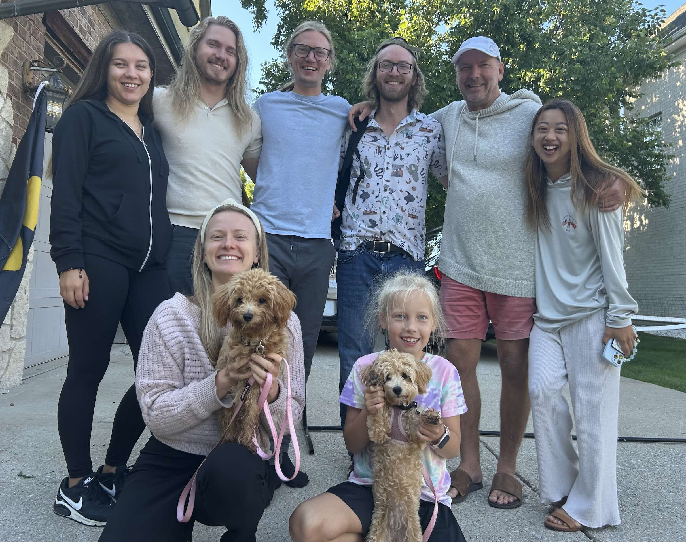

Meet the Team
- Diego Velasco (diegoavelasco@lewisu.edu)
- Jayson Matula (jaysonmmatula@lewisu.edu)
- Sai Vihas Yadav (saivihasyadav@lewisu.edu)
- Ilias Yeck (iliasmyeck@lewisu.edu)
Team CheesyCake - GitHub Repository: https://github.com/DV-SoftEnginFall2025-Sprint-04/gettingToKnowEachOther